DICAS DE JOGOS: Modo História
Jogar videogame é um hobby compartilhado por milhões de pessoas no mundo. Muitas pessoas acabam jogando vários games ao mesmo tempo, reduzindo a qualidade do tempo dedicado à jogatina. Afinal, focar em muitas informações de diferentes jogos vai dificultar a tarefa de apreciar os detalhes e particularidades de um game, além de quebrar a mágia da imersão. Aqui vão dicas de jogos que prendem em sua história..
The Last Of Us
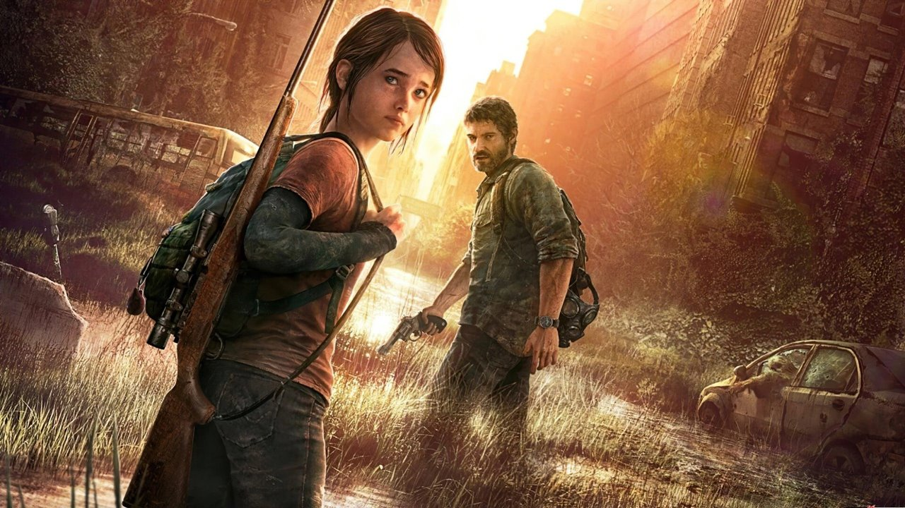Na história de The Last of Us, Joel, um sobrevivente brutal, e Ellie, uma adolescente corajosa e madura apesar da pouca idade, devem unir forças para saírem vivos da sua jornada pelos Estados Unidos. The Last of Us é um jogo eletrônico pós-apocalíptico de ação-aventura e sobrevivência apresentado a partir de uma perspectiva em terceira pessoa. O jogador atravessa uma série de ambientes arruinados, passando por locais variados como cidades, florestas, edifícios e esgotos a fim de avançar pela história.
The Last Of Us 2
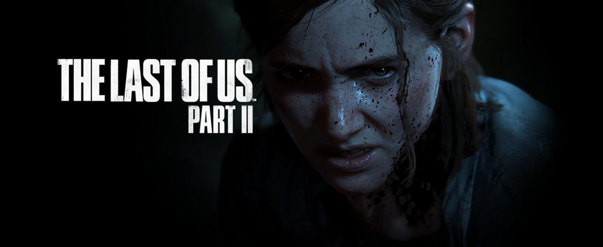The Last of Us Part II se passa cinco anos após os acontecimentos do primeiro jogo. Joel e Ellie estão em um acampamento em Jackson, onde tentam levar uma vida normal. Nesse tempo, ela se envolve com Dina em um relacionamento que vai amadurecendo ao longo do jogo. The Last of Us 2 é um jogo eletrônico pós-apocalíptico de ação-aventura e sobrevivência apresentado a partir de uma perspectiva em terceira pessoa. O jogador atravessa uma série de ambientes arruinados, passando por locais variados como cidades, florestas, edifícios e esgotos a fim de avançar pela história.
Horizon Zero Dawn
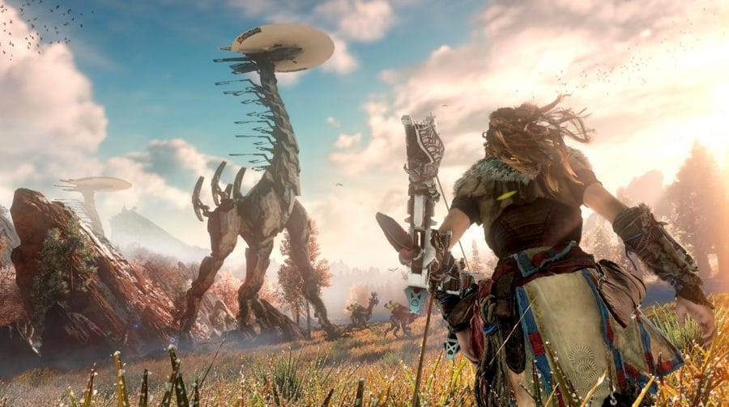Em 3027, Aloy tem seis anos de idade e cai em uma ruína subterrânea e encontra um dispositivo digital da sociedade antiga chamado Foco. Esse HoloLens do futuro oferece, entre outras coisas, visão de realidade aumentada com novas habilidades de percepção — o próprio modo detetive do Batman. Horizon Zero Dawn é um jogo eletrônico de RPG de ação pós-apocalíptico em um mundo aberto, desenvolvido pela Guerrilla Games.
Horizon Forbidden West

O jogo é uma continuação de Horizon: Zero Dawn, lançado em 2017. A sequência continuará a história de Aloy, protagonista da franquia, que tem o objetivo de investigar uma peste que se espalhou pela Terra e envenena os animais e plantas do local. Horizon Forbidden West é um jogo eletrônico de RPG de ação desenvolvido pela Guerrilla Games e publicado pela Sony Interactive Entertainment. Foi lançado em 18 de fevereiro de 2022 para PlayStation 4 e PlayStation 5
The Evil Within
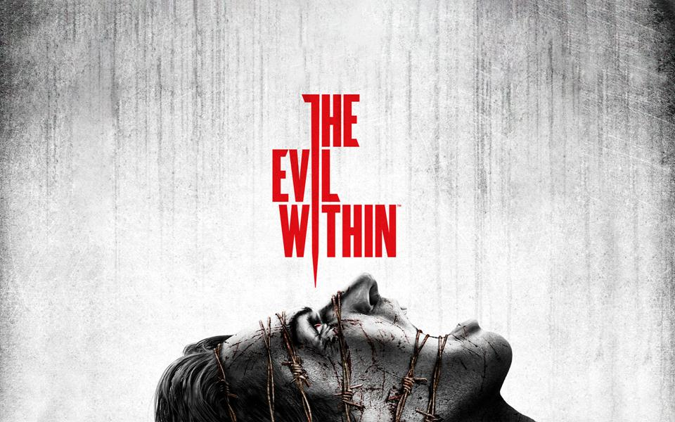A história do jogo se passa na cidade fictícia de Krimson City, nos Estados Unidos. Após um chamado de emergência de polícia no hospício Beacon Mental Hospital, o detetive veterano Sebastian Castellanos, seu parceiro Joseph Oda e sua equipe vão até o local para averiguar.
The Evil Within 2
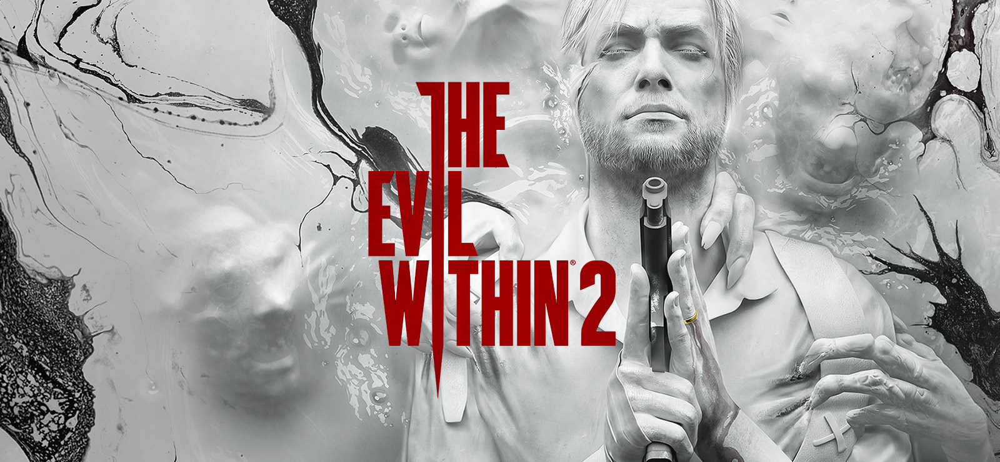A história de The Evil Within 2 se passa três anos após os acontecimentos do primeiro jogo. Encontramos o agora ex-detetive Sebastian Castellanos destruído psicologicamente – não só pelos horrores que vivenciou no STEM com o bizarro Ruvik – mas pela perda da filha, Lily e da esposa, Myra
Until Dawn
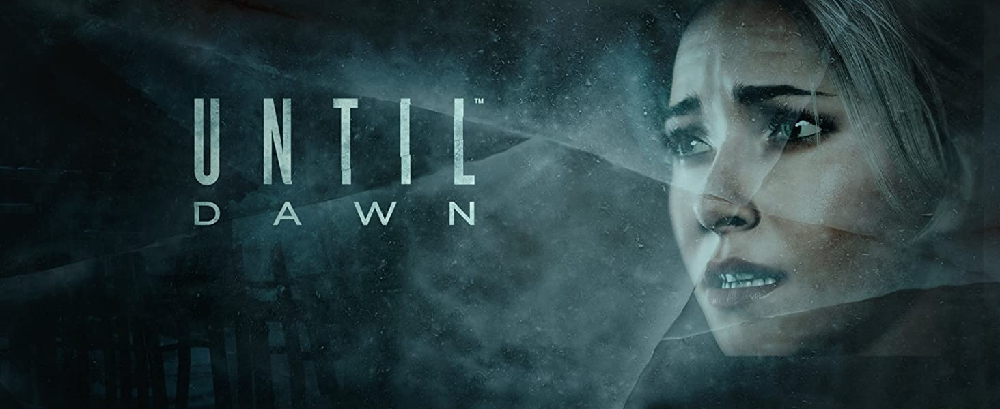Um homem estranho se agacha pela beira do penhasco e estende a mão para ajudá-las, mas Hannah e Beth caem em sua aparente morte, para nunca mais serem vistas. No aniversário de um ano dos desaparecimento das gêmeas Washington, os sete amigos restantes aceitam o convite de Josh de volta à montanha. Until Dawn é um jogo de terror de múltiplas escolhas EXTREMAMENTE bonito e bem feito.
The Resident Evil 7
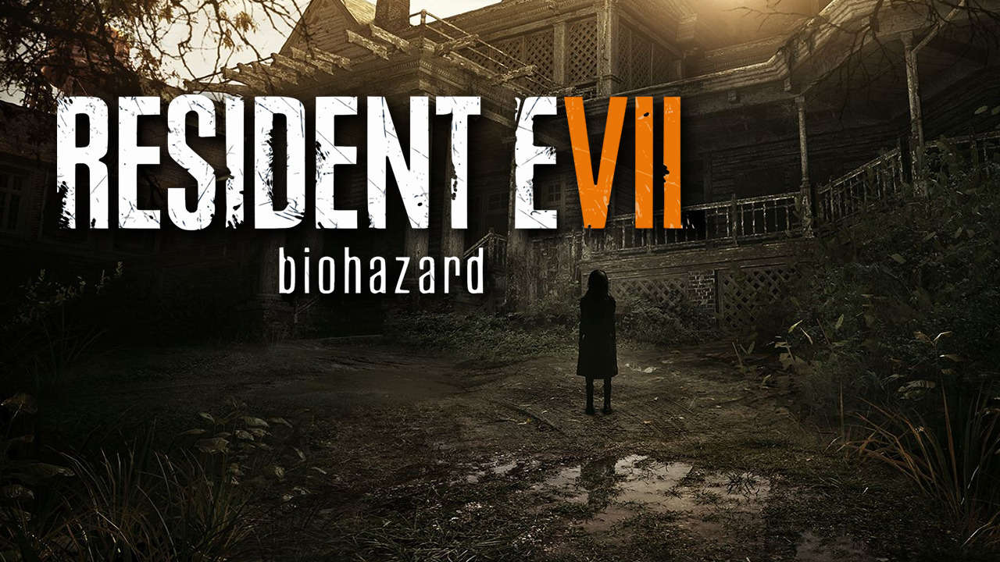A história segue a busca do civil Ethan Winters por sua esposa Mia, que o leva a uma mansão agrícola aparentemente abandonada e habitada pela Baker Family. Ethan faz uso de armas e ferramentas na luta contra os membros da família e os "Mofados", uma forma humanoide de bactéria.
The Resident Evil Village
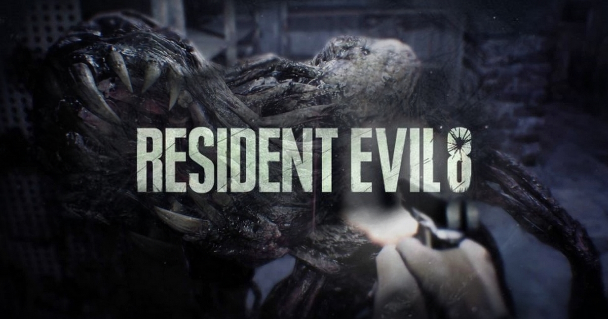Como no título anterior, voltamos na pele de Ethan Winters, que ao lado de sua esposa Mia e sua filha bebê Rose, tentam esquecer o pesadelo vivido na Louisiana e recomeçar a vida na Europa, quando fantasmas do passado voltam a atormentar o casal.
Hellblade: Senua’s Sacrifice
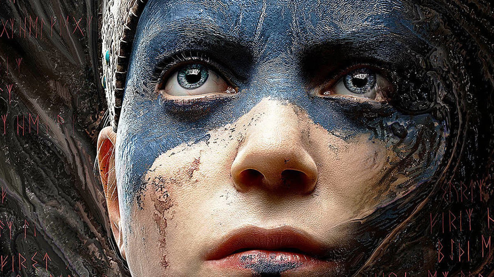A história, baseada na mitologia nórdica e mitologia celta, foca-se em Senua, sobre a viagem que ela embarca para o submundo de Helheim, para salvar a alma de seu amado (Dilion), nessa viagem Senua encontrará e enfrentará seu passados e seus traumas, consequentemente lidando com eles.
Red Dead Redemption
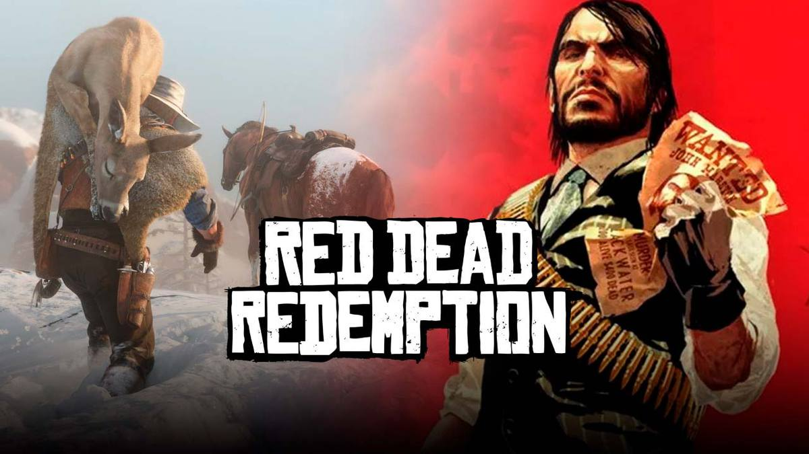O jogo se passa em 1911 durante o declínio do Velho Oeste e segue a história de John Marston, um antigo fora da lei cuja esposa e filho foram tomados como reféns pelo governo para forçá-lo a trabalhar como seu pistoleiro contratado.
Red Dead Redemption 2
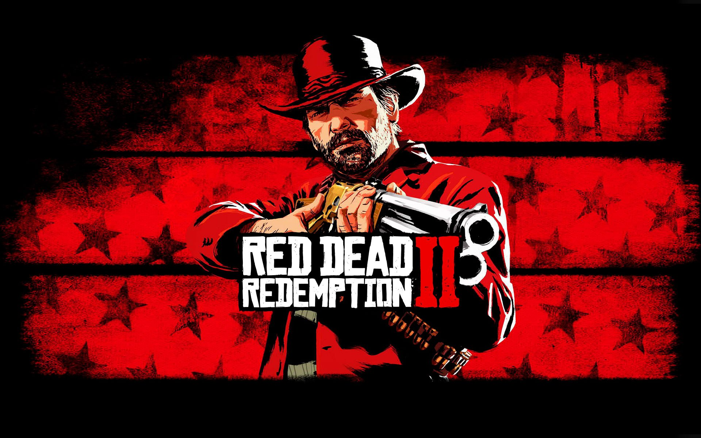A história se passa em 1899 em uma representação ficcional do oeste, meio-oeste e sul dos Estados Unidos e acompanha o fora da lei Arthur Morgan, que precisa lidar com o declínio do Velho Oeste e sobreviver à perseguição de forças governamentais, gangues rivais e outros adversários.